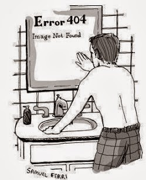

git commit - creates a snapshot of the current changes made and stores it in a git database & git local repo
git tag - one creates a tag after a milestone or a specific task/objective has been completed.
